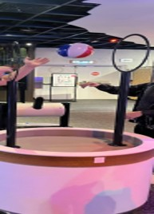
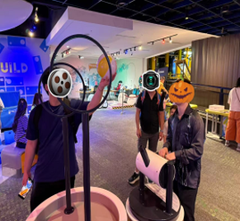
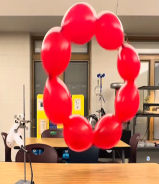
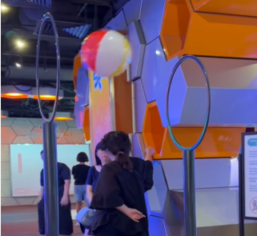
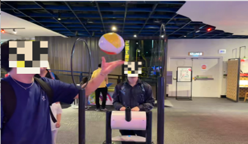
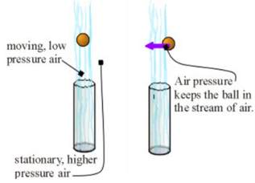
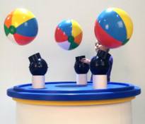
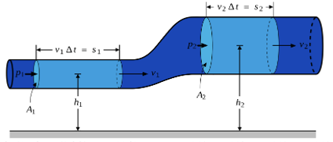
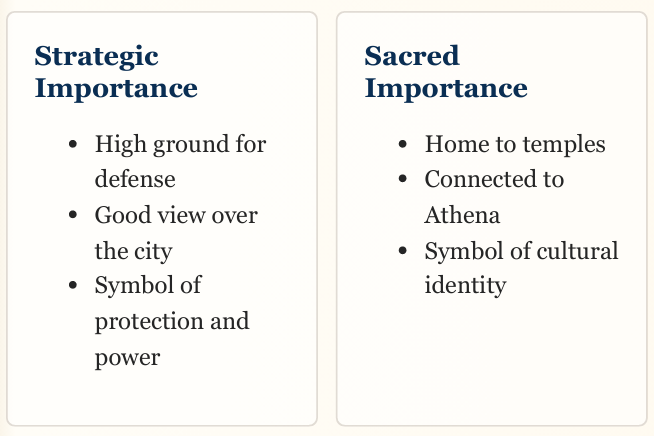

PQL 7002 Portfolio & Reflections
Instructional Design and Technology | Universiti Malaya
Hello, I am SHEN YIHAN
Matric: 24053722 | Master's Student
Universiti Malaya
PQL 7002: Instructional Design
Prof. Dr. Farrah Dina Yusop
Welcome to My Reflection Space
This digital portfolio presents my learning progress in the PQL 7002 course. The coursework challenged my early assumptions about educational materials. I realized that effective teaching requires more than just presenting information.
I began by evaluating a physical science exhibit at Petrosains, then designed an interactive 3D module for secondary school history students. These course assignments taught me how to apply abstract learning theories to practical instructional design.
Instructional Design Models (Weeks 1-4)
Reflecting on ADDIE, Kemp, and ASSURE models. This section is reserved for future course notes integration...
Learning Theories (Weeks 5-8)
Behaviorism, Cognitivism, and Constructivism...
Modern Tech Frameworks (Weeks 9-13)
TPACK, SAMR, and Community of Inquiry (CoI)...
A1 Chapters (art1-9)
Exhibit Overview & Target Audience
Our fieldwork at Petrosains, The Discovery Centre, centered on a critical design analysis of "The Air Stream" (Bernoulli Blower) exhibit.
The target audience consists predominantly of lower secondary students, children, and general science center museum visitors. The installation is engineered as a highly dynamic, public-facing exhibit designed to introduce fluid dynamics in a casual, open-floor environment.

Figure 1: The Air Stream Installation Setup
Intended Learning Objectives (LOs)
According to instructional design standards, the station intends to achieve clear outcomes across two core domains:
- Cognitive Domain: Learners should be able to state at least two key facts regarding how fast-moving air streams create pressure differentials to keep the ball afloat.
- Psychomotor Domain: Learners physically manipulate, balance, and successfully guide the ball through suspended air rings.

Figure 2: Stated Educational Metrics
Psychomotor and Affective Engagement
In the affective domain, the exhibit is undeniably a masterpiece. It serves as an immediate crowd-puller. The physical sensation of air pressure and the instant visual reward of a levitating ball establish an immediate behavioral engagement loop.
Visitors are drawn instinctively to the psychomotor challenge of balancing the ball, resulting in high levels of situational interest and active participation on the museum floor.

Figure 3: Psychomotor Interaction Patterns
Theoretical Application: Kolb's Learning Cycle
To analyze the learning mechanics rigorously, we mapped visitor behaviors to Kolb's Experiential Learning Cycle (1984).
The exhibit beautifully sparks Stage 1 (Concrete Experience) through tactile play and initiates Stage 2 (Reflective Observation) as users adjust their hands to steady the ball. However, without systematic mediation, the cycle frequently halts before reaching deeper theoretical integration.

Figure 4: Behavioral Mapping via Learning Cycle
Cognitive Gaps: The "Task-Completion" Trap
A critical instructional flaw identified during our observation was the task-completion trap. Because the exhibit frames the experience as a game (getting the ball through the hoop), children focus exclusively on winning the game rather than learning the science.
The static information boards explaining Bernoulli's principle were ignored because they were visually detached from the active air stream, proving that fun interaction does not guarantee cognitive mastery.

Figure 5: Task Focus vs. Conceptual Learning Breakdown
Universal Design for Learning (UDL) Blind Spots
Evaluating the exhibit through the lens of Universal Design for Learning (UDL) revealed significant accessibility blind spots:
- Auditory Barriers: Extreme ambient museum noise rendered any subtle audio cues completely ineffective.
- Physical Barriers: Fixed infrastructure heights and heavy motor coordination requirements unconsciously excluded younger children and wheelchair users.

Figure 6: Structural and Environmental Inclusivity Barriers
Redesign Solution: Augmented Digital Scaffolding
To bridge the cognitive disconnect, our team proposed integrating augmented digital scaffolding directly behind the physical air stream.
By implementing responsive digital visualization screen overlays, real-time airflow lines and air velocity vector arrows react dynamically as the user moves the ball. This directly transforms the invisible physics of fluid dynamics into a visible, immediate cognitive anchor.

Figure 7: Proposed Dynamic Interface Overlay
Redesign Solution: Inclusive Hardware
To honor UDL pillars, the physical architecture requires adjustment. We conceptualized a height-adjustable vertical track for the air blower to ensure universal physical access for special needs individuals.
Additionally, expanding the booth to accommodate dual-user stations allows peer-to-peer collaborative problem solving, utilizing Vygotsky’s Zone of Proximal Development (ZPD) to maximize team-driven exploration.

Figure 8: Adaptive Infrastructure Concepts
My Pedagogical Paradigm Shift
Executing Assignment 1 completely revolutionized my professional lens as an educator. Previously, I evaluated educational technologies through a superficial lens—praising tools simply because they were "high-tech" or "highly entertaining."
This analytical fieldwork forced me to realize that affective interaction does not automatically guarantee cognitive retention. True learning demands deliberate, empathetic scaffolding that guides raw curiosity into systemic abstract mastery.
This lesson fundamentally reshaped my design choices. Moving forward into Assignment 2 (The Acropolis of Athens), I actively prevented hollow "gimmicks," ensuring that every piece of interactivity served as a rigorous, intentional anchor for history instruction.
A2 Chapters
Design Thinking: Empathizing with Form 1 Learners
For our instructional module, "Exploring the Acropolis of Athens," we applied the Design Thinking framework to address a genuine pedagogical pain point for Malaysian Form 1 History students.
Traditional history textbooks rely heavily on dense texts and static 2D maps. Through the Empathy phase, we realized that 13-year-olds inherently lack the spatial imagination required to visualize ancient Greek city-states (Polis). Abstract memorization leads to high cognitive fatigue and low intrinsic motivation.
Our defining mission became: How might we transform passive historical reading into an immersive spatial exploration?

Figure 1: Identifying the spatial cognition gap
Theoretical Fusion: TPACK & CTML
We anchored our solution in the TPACK Framework, carefully ensuring that 3D Technology served the Pedagogy, rather than simply being a visual gimmick.
By allowing students to physically navigate a digital Acropolis, we leveraged the Spatial Contiguity Principle from the Cognitive Theory of Multimedia Learning (CTML). Instead of reading text separate from an image, learners integrate information visually in real-time, drastically reducing extraneous cognitive load.

Figure 2: Aligning 3D Tech with Constructivist Pedagogy
Interactive 3D eBook Module
Try It Live!Interact with the actual digital artifact developed for our learners. Drag to rotate and zoom to explore the monuments.
Active Learning: Tagging & Mini Assembly
To ground the 3D exploration in Vygotsky's Social Constructivism, we designed collaborative peer tasks.
1. Monument Tagging: Learners work in groups to identify and tag temples dynamically, shifting from passive consumers to active knowledge builders.
2. The Mini Assembly: A role-playing scenario where students debate civic decisions (e.g., "Should we build ships or temples?"). This bridges architectural history with practical civic understanding.

Figure 3: Tagging activity and worksheet mapping
Gallery Walk Feedback & Future Iteration
During the Week 14 Gallery Walk, our instructor validated the core design of our module. However, peer feedback revealed a practical flaw in our presentation. We provided too much historical background before introducing the 3D model. This long introduction made the early stage feel dry, and several visitors noted it lacked immediate visual appeal.
I also realized the "Mini Assembly" activity needs refinement. The concept itself has great potential, but relying on printed worksheets limited student interaction. Moving constantly between an immersive digital environment and a piece of paper disrupted the learning experience. Learners clearly need a more accessible, interactive format to stay engaged.
Proposed Redesign: Web-based Role-playing
Observing the creative designs of other groups inspired my idea for our next iteration. We could transform the assessment phase into an interactive webpage featuring role-playing elements. Instead of filling out static paper forms, participants would take on the roles of ancient Athenian citizens. This digital approach directly replaces the worksheets. It increases interaction, deepens immersion, and aligns perfectly with Vygotsky's social constructivism by placing students inside the historical context they are studying.